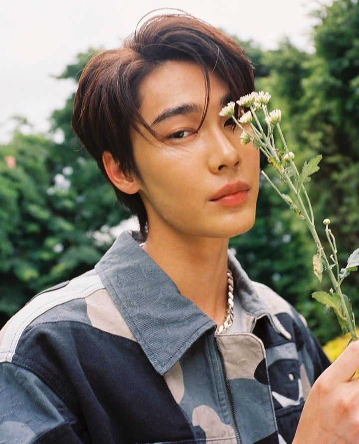
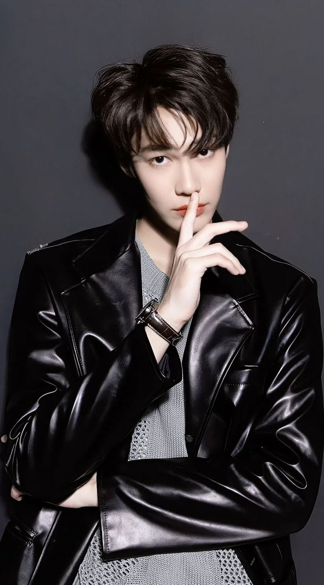

Happy 21 🤍
Happy 21, bestie! ✨ Nggak kerasa kita kenal sejak SMP, dari yang awalnya cuma tukeran cerita receh sampai akhirnya jadi orang yang aku percaya buat banyak hal. Di usia ini, semoga hidupmu makin lega, mimpi-mimpi kamu makin dekat, dan hari-hari kamu penuh hal baik yang datang tanpa perlu dipaksa. Kamu tuh orang baik, meskipun kamu nggak selalu lihat itu di diri kamu. Tapi aku lihat. Sejak dulu. Dan… yes, akhirnya kamu legal. Sekarang kamu bisa baca cerita-cerita aku tanpa bikin aku merasa jadi kriminal 😭✨ Selamat ulang tahun. Semoga kamu selalu menemukan alasan untuk tersenyum —bahkan di hari yang paling berat sekalipun.
 